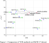
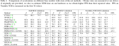

Accelerating Video Object Segmentation with Compressed Video
Kai Xu, Angela Yao
National University of Singapore
[arXiv] [Source]
Abstract
We propose an efficient plug-and-play acceleration framework for semi-supervised video object segmentation by exploiting the temporal redundancies in video presented by the compressed bitstream. Specifically, we propose a motion vector-based warping method for propagating segmentation masks from keyframes to other frames in a bi-directional and multi-hop manner. Additionally, we introduce a residual-based correction module that can fix wrongly propagated segmentation masks from noisy or erroneous motion vectors. Our approach is flexible and can be added on top of several existing video object segmentation algorithms. We achieved highly competitive results on DAVIS17 and YouTube-VOS on various base models with substantial speed-ups of up to 3.5X with marginal drops in accuracy.
Overall Structure

We accelerate off-the-shelf VOS methods by applying these methods as a base network to selected keyframes. The keyframe segmentations are propagated to non-keyframes with a soft motion vector propagation module and further refined via a residual-based correction module. The acceleration comes from the computational savings of propagation and correction compared to applying the base network to all frames in the sequence.
Results on Benchmarks
|  |  |
Qualitative Comparison

Qualitative comparison with state-of-the-art. With MiVOS as the base model, we propagate most of the segmentation, while competing methods FRTM and STM exhibit several failures, e.g. fail to provide a precise mask (row 1, body of dancer, row 2, cart), distinguish similar objects (row 3, two piglets get merged) or provide more precise boundaries (row 4 kite handle).
Bibtex